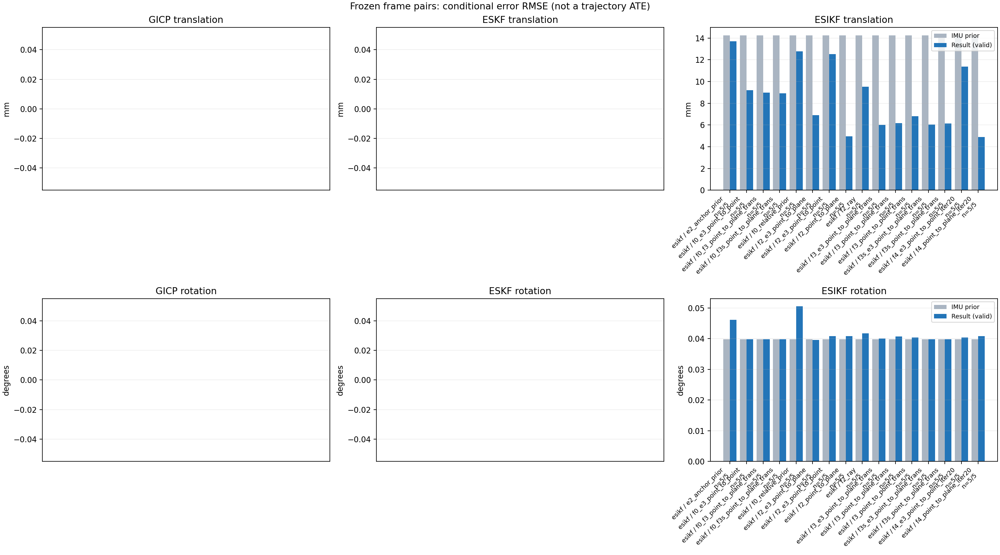

20261015_112659_forward · depth=disparity_cache · cache=2caa8b3a5415247f4d7e
模型视差：/home/ubuntu22/slam/SIO_SLAM/models/tensorrt/disp_896x448_fp16.plan；engine SHA256=604cf6ac1f705c877260711730dd5d2d58c2a21f3020c03c668401ef7fb1e768。输入为生产裁剪与光照处理后的 RGB 0..255；此实验使用原始浮点像素视差，不应用完整前端的邻域视差后处理。
原始 ONNX SHA256：e9f49736a65d68d06681add463866b6defdf78fdd7f4f50f6cc941b682fdc0bc。
代价体图改写验证：ONNX Runtime 固定随机特征输入，最大绝对误差 0；该项检查图改写，完整模型精度仍需由录制数据评估。
配准代码版本：744ac2d993ae629b0cc44a3b1d995e04ab4fad48；观测生成版本：744ac2d993ae629b0cc44a3b1d995e04ab4fad48。
固定图像对与纯 IMU 先验；ESKF 回放固定 GICP 观测，ESIKF 直接读取点云。真值只用于此报告。
同时查看 converged 与 solver_status：上游默认 Stereo 在 max_iter / stopped_at_minimum 时也可能置 converged=true。valid 表示输入检查通过，不表示精度提升。欧氏 GICP 未提供独立的点距 RMSE，该列显示 NaN。
误差按每对图像的锚点计算，单位 m / degrees。此处 RMSE 不是全序列 ATE；末帧受同一锚点条件约束。NIS 与条件马氏距离是诊断量，少量相关图像对不能用于宣称协方差已校准。
全部指标 CSV · R / P 矩阵 CSV · Stereo 求解逐轮 CSV · ESIKF 逐轮轨迹 CSV · 末轮 H / R / K_pose 矩阵 CSV · 配置快照 · 矢量图
unflagged 排除纯惯性先验平移误差超过 50 mm 的图像对；whitened 为误差按协方差白化后的每自由度均值，协方差与实际误差相符时约为 1。prior_whitened 用真值误差只检验先验 P；NIS 为 ESIKF 首轮 rᵀ(P+R)⁻¹r，不用真值，检验的是 P+R 的总量，单靠它分不开 P 与 R，偏差、错误对应和线性化误差也会抬高它。观测方差超过先验方差 1e+04 倍的方向视为不可观，从 NIS 及其自由度中去掉（nis_dof）。一致时 nis_per_dof 均值约 1、nis_over_chi2_median 中位数约 1；帧对少且共享序列，超出 95% 分位的比例只作参考。每轮重新关联时首轮只走到观测的一部分，nis 会偏小；nis_final 用最后一轮线性化点的创新 r_v + e_j，应以它为准。
| stage | method | variant | valid | total | result_translation_rmse_m | result_rotation_rmse_deg | result_translation_median_m | result_rotation_median_deg | result_translation_rmse_unflagged_m | result_rotation_rmse_unflagged_deg | improved_translation | improved_rotation | posterior_whitened_by_P_rot_mean | posterior_whitened_by_P_trans_mean | prior_whitened_by_P_rot_mean | prior_whitened_by_P_trans_mean | nis_per_dof_mean | nis_over_chi2_median_median | nis_exceeds_chi2_95_fraction | nis_final_per_dof_mean | nis_final_over_chi2_median_median | nis_final_exceeds_chi2_95_fraction |
|---|---|---|---|---|---|---|---|---|---|---|---|---|---|---|---|---|---|---|---|---|---|---|
| esikf | esikf | e2_anchor_prior | 5 | 5 | 0.013709 | 0.046073 | 0.0051647 | 0.010076 | 0.013709 | 0.046073 | 2 | 4 | 170.5 | 175.04 | 85.927 | 3.154 | 9.1777 | 6.1818 | 1 | 8.87 | 8.547 | 1 |
| esikf | esikf | f0_e3_point_to_point | 5 | 5 | 0.0091883 | 0.039802 | 0.0054751 | 0.010401 | 0.0091883 | 0.039802 | 2 | 1 | 69.791 | 1.531 | 68.003 | 0.014756 | 0.084802 | 0.073807 | 0 | 0.072135 | 0.046377 | 0 |
| esikf | esikf | f0_f3_point_to_plane_trans | 5 | 5 | 0.0089655 | 0.039749 | 0.0090684 | 0.010379 | 0.0089655 | 0.039749 | 2 | 4 | 69.498 | 47.104 | 68.003 | 0.014756 | 1.2439 | 0.12944 | 0.2 | 1.4497 | 0.22666 | 0.2 |
| esikf | esikf | f0_f3s_point_to_plane_trans | 5 | 5 | 0.0089026 | 0.039761 | 0.0091545 | 0.0104 | 0.0089026 | 0.039761 | 2 | 0 | 68.003 | 46.813 | 68.003 | 0.014756 | 1.2439 | 0.12944 | 0.2 | 1.4009 | 0.21568 | 0.2 |
| esikf | esikf | f0_relative_prior | 5 | 5 | 0.012775 | 0.050496 | 0.0061203 | 0.011869 | 0.012775 | 0.050496 | 2 | 1 | 123.55 | 171.76 | 68.003 | 0.014756 | 7.3968 | 3.3195 | 1 | 7.5091 | 3.9324 | 1 |
| esikf | esikf | f2_e3_point_to_plane | 5 | 5 | 0.0068915 | 0.039613 | 0.0045004 | 0.010382 | 0.0068915 | 0.039613 | 4 | 4 | 96.529 | 2.7988 | 85.927 | 3.154 | 0.75736 | 1.1179 | 0 | 0.92307 | 1.2176 | 0 |
| esikf | esikf | f2_e3_point_to_point | 5 | 5 | 0.012514 | 0.04085 | 0.0047206 | 0.010375 | 0.012514 | 0.04085 | 4 | 3 | 103.98 | 4.5122 | 85.927 | 3.154 | 0.1986 | 0.26247 | 0 | 0.27504 | 0.2852 | 0 |
| esikf | esikf | f2_point_to_plane | 5 | 5 | 0.0049703 | 0.040844 | 0.0043433 | 0.0097749 | 0.0049703 | 0.040844 | 2 | 3 | 120.9 | 15.619 | 85.927 | 3.154 | 12.521 | 15.1 | 1 | 11.804 | 13.989 | 1 |
| esikf | esikf | f2_ray | 5 | 5 | 0.0095201 | 0.041712 | 0.0042693 | 0.010621 | 0.0095201 | 0.041712 | 3 | 1 | 126.59 | 24.05 | 85.927 | 3.154 | 15.591 | 17.561 | 1 | 17.963 | 19.142 | 1 |
| esikf | esikf | f3_e3_point_to_plane_trans | 5 | 5 | 0.006002 | 0.040012 | 0.0044764 | 0.010395 | 0.006002 | 0.040012 | 4 | 2 | 97.43 | 2.4647 | 85.927 | 3.154 | 1.7775 | 2.3567 | 0.2 | 1.9176 | 2.3567 | 0.2 |
| esikf | esikf | f3_point_to_plane_trans | 5 | 5 | 0.00618 | 0.040741 | 0.0065651 | 0.010212 | 0.00618 | 0.040741 | 2 | 2 | 119.9 | 26.021 | 85.927 | 3.154 | 20.921 | 22.721 | 1 | 23.84 | 22.477 | 1 |
| esikf | esikf | f3_point_to_point_trans | 5 | 5 | 0.0068224 | 0.040339 | 0.0071132 | 0.010095 | 0.0068224 | 0.040339 | 2 | 2 | 122.66 | 193.94 | 85.927 | 3.154 | 6.9854 | 1.9261 | 0.4 | 43.088 | 19.404 | 1 |
| esikf | esikf | f3s_e3_point_to_plane_trans | 5 | 5 | 0.0060323 | 0.039761 | 0.0044764 | 0.0104 | 0.0060323 | 0.039761 | 4 | 0 | 85.927 | 2.4659 | 85.927 | 3.154 | 1.7775 | 2.3567 | 0.2 | 1.9389 | 2.3567 | 0.2 |
| esikf | esikf | f3s_point_to_plane_trans | 5 | 5 | 0.0061507 | 0.039761 | 0.0065917 | 0.0104 | 0.0061507 | 0.039761 | 2 | 0 | 85.927 | 25.811 | 85.927 | 3.154 | 20.921 | 22.721 | 1 | 23.634 | 22.477 | 1 |
| esikf | esikf | f4_e3_point_to_point_iter20 | 5 | 5 | 0.011365 | 0.040303 | 0.0047206 | 0.010375 | 0.011365 | 0.040303 | 4 | 3 | 103.03 | 4.6601 | 85.927 | 3.154 | 0.1986 | 0.26247 | 0 | 0.22392 | 0.2852 | 0 |
| esikf | esikf | f4_point_to_plane_iter20 | 5 | 5 | 0.0049092 | 0.040839 | 0.0040122 | 0.0097749 | 0.0049092 | 0.040839 | 2 | 3 | 120.88 | 15.378 | 85.927 | 3.154 | 12.521 | 15.1 | 1 | 11.74 | 13.775 | 1 |

| stage | case | method | variant | status | solver_status | inliers | converged | covariance_convention | covariance_from_hessian | fitness | registration_rmse_m | prior_trans_error_m | result_trans_error_m | prior_rot_error_deg | result_rot_error_deg | prior_flagged | R_rot_trace_rad2 | R_pos_trace_m2 | nis_regularized | posterior_whitened_by_P_rot | posterior_whitened_by_P_trans | prior_whitened_by_P_rot | prior_whitened_by_P_trans | nis_per_dof | nis_dof | nis_final_per_dof | nis_final_dof |
|---|---|---|---|---|---|---|---|---|---|---|---|---|---|---|---|---|---|---|---|---|---|---|---|---|---|---|---|
| esikf | static_start | esikf | e2_anchor_prior | updated | converged | 17220 | 1 | 1 | 0 | 0 | 8.9949e-05 | 0.00072077 | 0.0025701 | 0.002522 | 0 | 1.0914e-07 | 8.6611e-07 | nan | 2.4261 | 3.304 | 2.4902 | 0.031395 | 4.1137 | 6 | 4.6232 | 6 | |
| esikf | static_start | esikf | f0_relative_prior | updated | converged | 17237 | 1 | 1 | 0 | 0 | 8.9949e-05 | 0.0029542 | 0.0025701 | 0.0025807 | 0 | 1.088e-07 | 8.6489e-07 | nan | 2.2508 | 13.897 | 2.187 | 0.0016697 | 2.1474 | 6 | 3.5051 | 6 | |
| esikf | static_start | esikf | f2_point_to_plane | updated | converged | 17220 | 1 | 1 | 0 | 0 | 8.9949e-05 | 0.00040936 | 0.0025701 | 0.0024737 | 0 | 7.64e-07 | 3.4098e-06 | nan | 2.3503 | 0.76175 | 2.4902 | 0.031395 | 7.4292 | 6 | 7.1675 | 6 | |
| esikf | static_start | esikf | f2_ray | updated | converged | 17220 | 1 | 1 | 0 | 0 | 8.9949e-05 | 0.00081719 | 0.0025701 | 0.0025874 | 0 | 0.0093593 | 1.2719e-05 | nan | 2.5183 | 3.095 | 2.4902 | 0.031395 | 13.937 | 3 | 15.097 | 3 | |
| esikf | static_start | esikf | f3_point_to_point_trans | updated | converged | 17222 | 1 | 1 | 0 | 0 | 8.9949e-05 | 0.0014343 | 0.0025701 | 0.0025804 | 0 | 0.1091 | 8.6486e-07 | nan | 2.5033 | 18.676 | 2.4902 | 0.031395 | 11.216 | 3 | 15.303 | 3 | |
| esikf | static_start | esikf | f3_point_to_plane_trans | updated | converged | 17220 | 1 | 1 | 0 | 0 | 8.9949e-05 | 0.00094337 | 0.0025701 | 0.0025764 | 0 | 0.76331 | 3.4074e-06 | nan | 2.4983 | 4.1952 | 2.4902 | 0.031395 | 19.659 | 3 | 17.727 | 3 | |
| esikf | static_start | esikf | f0_f3_point_to_plane_trans | updated_not_converged | max_iterations | 17287 | 0 | 1 | 0 | 0 | 8.9949e-05 | 0.0050317 | 0.0025701 | 0.0025829 | 0 | 0.75635 | 3.332e-06 | nan | 2.2039 | 24.139 | 2.187 | 0.0016697 | 5.129 | 3 | 6.0203 | 3 | |
| esikf | static_start | esikf | f3s_point_to_plane_trans | updated | converged | 17220 | 1 | 1 | 0 | 0 | 8.9949e-05 | 0.00094336 | 0.0025701 | 0.0025701 | 0 | 0.76331 | 3.4074e-06 | nan | 2.4902 | 4.1952 | 2.4902 | 0.031395 | 19.659 | 3 | 17.727 | 3 | |
| esikf | static_start | esikf | f0_f3s_point_to_plane_trans | updated | converged | 17283 | 1 | 1 | 0 | 0 | 8.9949e-05 | 0.0049336 | 0.0025701 | 0.0025701 | 0 | 0.75732 | 3.3367e-06 | nan | 2.187 | 23.147 | 2.187 | 0.0016697 | 5.129 | 3 | 5.7591 | 3 | |
| esikf | static_start | esikf | f4_point_to_plane_iter20 | updated | converged | 17220 | 1 | 1 | 0 | 0 | 8.9949e-05 | 0.00040936 | 0.0025701 | 0.0024737 | 0 | 7.64e-07 | 3.4098e-06 | nan | 2.3503 | 0.76175 | 2.4902 | 0.031395 | 7.4292 | 6 | 7.1675 | 6 | |
| esikf | static_start | esikf | f2_e3_point_to_point | updated | converged | 17220 | 1 | 1 | 0 | 0 | 8.9949e-05 | 9.9836e-05 | 0.0025701 | 0.0025702 | 0 | 1.2139e-05 | 7.2072e-05 | nan | 2.489 | 0.039133 | 2.4902 | 0.031395 | 0.070838 | 4 | 0.070838 | 4 | |
| esikf | static_start | esikf | f0_e3_point_to_point | updated | converged | 17220 | 1 | 1 | 0 | 0 | 8.9949e-05 | 0.00031666 | 0.0025701 | 0.0025708 | 0 | 1.2144e-05 | 7.2162e-05 | nan | 2.1872 | 0.02299 | 2.187 | 0.0016697 | 0.061937 | 4 | 0.065277 | 4 | |
| esikf | static_start | esikf | f2_e3_point_to_plane | updated | converged | 17220 | 1 | 1 | 0 | 0 | 8.9949e-05 | 9.5934e-05 | 0.0025701 | 0.0025683 | 0 | 4.4594e-05 | 0.00012201 | nan | 2.4867 | 0.035907 | 2.4902 | 0.031395 | 0.16134 | 3 | 0.16134 | 3 | |
| esikf | static_start | esikf | f3_e3_point_to_plane_trans | updated | converged | 17220 | 1 | 1 | 0 | 0 | 8.9949e-05 | 0.00011022 | 0.0025701 | 0.0025703 | 0 | 0.76321 | 0.00012201 | nan | 2.4904 | 0.047414 | 2.4902 | 0.031395 | 0.65243 | 3 | 0.65243 | 3 | |
| esikf | static_start | esikf | f3s_e3_point_to_plane_trans | updated | converged | 17220 | 1 | 1 | 0 | 0 | 8.9949e-05 | 0.00011022 | 0.0025701 | 0.0025701 | 0 | 0.76321 | 0.00012201 | nan | 2.4902 | 0.047414 | 2.4902 | 0.031395 | 0.65243 | 3 | 0.65243 | 3 | |
| esikf | static_start | esikf | f4_e3_point_to_point_iter20 | updated | converged | 17220 | 1 | 1 | 0 | 0 | 8.9949e-05 | 9.9836e-05 | 0.0025701 | 0.0025702 | 0 | 1.2139e-05 | 7.2072e-05 | nan | 2.489 | 0.039133 | 2.4902 | 0.031395 | 0.070838 | 4 | 0.070838 | 4 | |
| esikf | sync_motion | esikf | e2_anchor_prior | updated | converged | 16218 | 1 | 1 | 0 | 0 | 0.0014774 | 0.0022758 | 0.0104 | 0.010076 | 0 | 1.1405e-07 | 9.2474e-07 | nan | 31.086 | 35.858 | 29.932 | 3.8349 | 5.5101 | 6 | 12.344 | 6 | |
| esikf | sync_motion | esikf | f0_relative_prior | updated | converged | 16166 | 1 | 1 | 0 | 0 | 0.0014774 | 0.0043122 | 0.0104 | 0.011869 | 0 | 1.1517e-07 | 9.4252e-07 | nan | 39.61 | 98.632 | 29.101 | 0.012783 | 2.4 | 6 | 10.792 | 6 | |
| esikf | sync_motion | esikf | f2_point_to_plane | updated | converged | 16228 | 1 | 1 | 0 | 0 | 0.0014774 | 0.0018955 | 0.0104 | 0.0097749 | 0 | 7.8259e-07 | 3.5852e-06 | nan | 26.872 | 10.564 | 29.932 | 3.8349 | 13.459 | 6 | 15.192 | 6 | |
| esikf | sync_motion | esikf | f2_ray | updated | converged | 16226 | 1 | 1 | 0 | 0 | 0.0014774 | 0.0011543 | 0.0104 | 0.010621 | 0 | 0.0064613 | 1.1006e-05 | nan | 31.258 | 3.3736 | 29.932 | 3.8349 | 30.201 | 3 | 29.828 | 3 | |
| esikf | sync_motion | esikf | f3_point_to_point_trans | updated | converged | 16321 | 1 | 1 | 0 | 0 | 0.0014774 | 0.0074025 | 0.0104 | 0.010095 | 0 | 0.11266 | 9.0663e-07 | nan | 29.233 | 457.25 | 29.932 | 3.8349 | 20.303 | 3 | 170.91 | 3 | |
| esikf | sync_motion | esikf | f3_point_to_plane_trans | updated | converged | 16215 | 1 | 1 | 0 | 0 | 0.0014774 | 0.0027422 | 0.0104 | 0.010212 | 0 | 0.78843 | 3.645e-06 | nan | 29.125 | 23.106 | 29.932 | 3.8349 | 50.091 | 3 | 56.994 | 3 | |
| esikf | sync_motion | esikf | f0_f3_point_to_plane_trans | updated_not_converged | max_iterations | 16261 | 0 | 1 | 0 | 0 | 0.0014774 | 0.009522 | 0.0104 | 0.010379 | 0 | 0.78838 | 3.5132e-06 | nan | 29.049 | 75.506 | 29.101 | 0.012783 | 0.90996 | 3 | 0.97844 | 3 | |
| esikf | sync_motion | esikf | f3s_point_to_plane_trans | updated | converged | 16216 | 1 | 1 | 0 | 0 | 0.0014774 | 0.0027461 | 0.0104 | 0.0104 | 0 | 0.78847 | 3.6425e-06 | nan | 29.932 | 23.167 | 29.932 | 3.8349 | 50.091 | 3 | 57.131 | 3 | |
| esikf | sync_motion | esikf | f0_f3s_point_to_plane_trans | updated_not_converged | max_iterations | 16266 | 0 | 1 | 0 | 0 | 0.0014774 | 0.0096388 | 0.0104 | 0.0104 | 0 | 0.78762 | 3.5072e-06 | nan | 29.101 | 77.453 | 29.101 | 0.012783 | 0.90996 | 3 | 1.0051 | 3 | |
| esikf | sync_motion | esikf | f4_point_to_plane_iter20 | updated | converged | 16228 | 1 | 1 | 0 | 0 | 0.0014774 | 0.0018955 | 0.0104 | 0.0097749 | 0 | 7.8259e-07 | 3.5852e-06 | nan | 26.872 | 10.564 | 29.932 | 3.8349 | 13.459 | 6 | 15.192 | 6 | |
| esikf | sync_motion | esikf | f2_e3_point_to_point | updated | converged | 16235 | 1 | 1 | 0 | 0 | 0.0014774 | 0.0014682 | 0.0104 | 0.010375 | 0 | 1.2627e-05 | 7.6599e-05 | nan | 29.856 | 3.8226 | 29.932 | 3.8349 | 0.23106 | 4 | 0.23106 | 4 | |
| esikf | sync_motion | esikf | f0_e3_point_to_point | updated | converged | 16182 | 1 | 1 | 0 | 0 | 0.0014774 | 0.0040147 | 0.0104 | 0.010401 | 0 | 1.2795e-05 | 7.84e-05 | nan | 29.169 | 1.2694 | 29.101 | 0.012783 | 0.043952 | 4 | 0.21362 | 4 | |
| esikf | sync_motion | esikf | f2_e3_point_to_plane | updated | converged | 16235 | 1 | 1 | 0 | 0 | 0.0014774 | 0.0014649 | 0.0104 | 0.010382 | 0 | 4.5467e-05 | 0.00012839 | nan | 29.848 | 3.8071 | 29.932 | 3.8349 | 0.88167 | 3 | 0.88167 | 3 | |
| esikf | sync_motion | esikf | f3_e3_point_to_plane_trans | updated | converged | 16235 | 1 | 1 | 0 | 0 | 0.0014774 | 0.001471 | 0.0104 | 0.010395 | 0 | 0.77814 | 0.00012839 | nan | 29.915 | 3.8426 | 29.932 | 3.8349 | 1.8586 | 3 | 1.8586 | 3 | |
| esikf | sync_motion | esikf | f3s_e3_point_to_plane_trans | updated | converged | 16235 | 1 | 1 | 0 | 0 | 0.0014774 | 0.001471 | 0.0104 | 0.0104 | 0 | 0.77814 | 0.00012839 | nan | 29.932 | 3.8426 | 29.932 | 3.8349 | 1.8586 | 3 | 1.8586 | 3 | |
| esikf | sync_motion | esikf | f4_e3_point_to_point_iter20 | updated | converged | 16235 | 1 | 1 | 0 | 0 | 0.0014774 | 0.0014682 | 0.0104 | 0.010375 | 0 | 1.2627e-05 | 7.6599e-05 | nan | 29.856 | 3.8226 | 29.932 | 3.8349 | 0.23106 | 4 | 0.23106 | 4 | |
| esikf | main_motion | esikf | e2_anchor_prior | updated_not_converged | max_iterations | 17251 | 0 | 1 | 0 | 0 | 0.0048575 | 0.0051647 | 0.029147 | 0.02909 | 0 | 9.9166e-08 | 1.0165e-06 | nan | 318.45 | 116.24 | 237.9 | 4.6402 | 4.352 | 6 | 7.6183 | 6 | |
| esikf | main_motion | esikf | f0_relative_prior | updated_not_converged | max_iterations | 17282 | 0 | 1 | 0 | 0 | 0.0048575 | 0.0061203 | 0.029147 | 0.02936 | 0 | 9.8593e-08 | 1.0069e-06 | nan | 207.93 | 148.27 | 189.47 | 0.020801 | 2.9588 | 6 | 2.987 | 6 | |
| esikf | main_motion | esikf | f2_point_to_plane | updated | converged | 17244 | 1 | 1 | 0 | 0 | 0.0048575 | 0.0050104 | 0.029147 | 0.029273 | 0 | 7.2222e-07 | 3.8378e-06 | nan | 301.68 | 25.207 | 237.9 | 4.6402 | 15.412 | 6 | 18.077 | 6 | |
| esikf | main_motion | esikf | f2_ray | updated | converged | 17205 | 1 | 1 | 0 | 0 | 0.0048575 | 0.0042693 | 0.029147 | 0.030425 | 0 | 0.0061663 | 1.2254e-05 | nan | 324.08 | 10.522 | 237.9 | 4.6402 | 13.156 | 3 | 23.669 | 3 | |
| esikf | main_motion | esikf | f3_point_to_point_trans | updated_not_converged | max_iterations | 17275 | 0 | 1 | 0 | 0 | 0.0048575 | 0.0071132 | 0.029147 | 0.029666 | 0 | 0.096389 | 9.6745e-07 | nan | 319.02 | 288.87 | 237.9 | 4.6402 | 1.519 | 3 | 22.554 | 3 | |
| esikf | main_motion | esikf | f3_point_to_plane_trans | updated | converged | 17310 | 1 | 1 | 0 | 0 | 0.0048575 | 0.0070551 | 0.029147 | 0.029288 | 0 | 0.71566 | 3.7831e-06 | nan | 301.56 | 42.451 | 237.9 | 4.6402 | 17.92 | 3 | 30.24 | 3 | |
| esikf | main_motion | esikf | f0_f3_point_to_plane_trans | updated_not_converged | max_iterations | 17336 | 0 | 1 | 0 | 0 | 0.0048575 | 0.012743 | 0.029147 | 0.029146 | 0 | 0.71259 | 3.5723e-06 | nan | 194.55 | 79.55 | 189.47 | 0.020801 | 0.10208 | 3 | 0.17876 | 3 | |
| esikf | main_motion | esikf | f3s_point_to_plane_trans | updated_not_converged | max_iterations | 17308 | 0 | 1 | 0 | 0 | 0.0048575 | 0.0069816 | 0.029147 | 0.029147 | 0 | 0.7169 | 3.7966e-06 | nan | 237.9 | 41.464 | 237.9 | 4.6402 | 17.92 | 3 | 29.002 | 3 | |
| esikf | main_motion | esikf | f0_f3s_point_to_plane_trans | updated_not_converged | max_iterations | 17336 | 0 | 1 | 0 | 0 | 0.0048575 | 0.012432 | 0.029147 | 0.029147 | 0 | 0.71418 | 3.5709e-06 | nan | 189.47 | 77.017 | 189.47 | 0.020801 | 0.10208 | 3 | 0.1701 | 3 | |
| esikf | main_motion | esikf | f4_point_to_plane_iter20 | updated | converged | 17244 | 1 | 1 | 0 | 0 | 0.0048575 | 0.0050104 | 0.029147 | 0.029273 | 0 | 7.2222e-07 | 3.8378e-06 | nan | 301.68 | 25.207 | 237.9 | 4.6402 | 15.412 | 6 | 18.077 | 6 | |
| esikf | main_motion | esikf | f2_e3_point_to_point | updated | converged | 17278 | 1 | 1 | 0 | 0 | 0.0048575 | 0.0047206 | 0.029147 | 0.029143 | 0 | 1.1058e-05 | 8.5281e-05 | nan | 243.22 | 5.0661 | 237.9 | 4.6402 | 0.21776 | 4 | 0.23933 | 4 | |
| esikf | main_motion | esikf | f0_e3_point_to_point | updated_not_converged | max_iterations | 17236 | 0 | 1 | 0 | 0 | 0.0048575 | 0.0054751 | 0.029147 | 0.029164 | 0 | 1.0996e-05 | 8.4082e-05 | nan | 194.65 | 1.612 | 189.47 | 0.020801 | 0.021998 | 5 | 0.040362 | 5 | |
| esikf | main_motion | esikf | f2_e3_point_to_plane | updated | converged | 17273 | 1 | 1 | 0 | 0 | 0.0048575 | 0.0045004 | 0.029147 | 0.029208 | 0 | 4.2832e-05 | 0.00014109 | nan | 244.53 | 4.5232 | 237.9 | 4.6402 | 0.93353 | 3 | 0.96025 | 3 | |
| esikf | main_motion | esikf | f3_e3_point_to_plane_trans | updated | converged | 17270 | 1 | 1 | 0 | 0 | 0.0048575 | 0.0044764 | 0.029147 | 0.029202 | 0 | 0.73291 | 0.00014129 | nan | 244.33 | 4.457 | 237.9 | 4.6402 | 1.2546 | 3 | 1.3202 | 3 | |
| esikf | main_motion | esikf | f3s_e3_point_to_plane_trans | updated | converged | 17271 | 1 | 1 | 0 | 0 | 0.0048575 | 0.0044764 | 0.029147 | 0.029147 | 0 | 0.73285 | 0.00014128 | nan | 237.9 | 4.4569 | 237.9 | 4.6402 | 1.2546 | 3 | 1.3205 | 3 | |
| esikf | main_motion | esikf | f4_e3_point_to_point_iter20 | updated | converged | 17278 | 1 | 1 | 0 | 0 | 0.0048575 | 0.0047206 | 0.029147 | 0.029143 | 0 | 1.1058e-05 | 8.5281e-05 | nan | 243.22 | 5.0661 | 237.9 | 4.6402 | 0.21776 | 4 | 0.23933 | 4 | |
| esikf | main_motion_long | esikf | e2_anchor_prior | updated_not_converged | max_iterations | 15531 | 0 | 1 | 0 | 0 | 0.029632 | 0.029034 | 0.083214 | 0.098227 | 0 | 1.4973e-07 | 1.6955e-06 | nan | 496.2 | 563.9 | 153.76 | 4.616 | 18.936 | 6 | 14.888 | 6 | |
| esikf | main_motion_long | esikf | f0_relative_prior | updated_not_converged | max_iterations | 15540 | 0 | 1 | 0 | 0 | 0.029632 | 0.026194 | 0.083214 | 0.10828 | 0 | 1.4809e-07 | 1.6597e-06 | nan | 364.51 | 440.69 | 115.95 | 0.021202 | 16.827 | 6 | 16.858 | 6 | |
| esikf | main_motion_long | esikf | f2_point_to_plane | updated_not_converged | max_iterations | 15519 | 0 | 1 | 0 | 0 | 0.029632 | 0.0043433 | 0.083214 | 0.085854 | 0 | 9.8154e-07 | 4.8707e-06 | nan | 269.03 | 9.9686 | 153.76 | 4.616 | 18.175 | 6 | 12.469 | 6 | |
| esikf | main_motion_long | esikf | f2_ray | updated_not_converged | max_iterations | 15556 | 0 | 1 | 0 | 0 | 0.029632 | 0.011684 | 0.083214 | 0.087407 | 0 | 0.0059292 | 4.0041e-05 | nan | 269.56 | 32.376 | 153.76 | 4.616 | 6.8116 | 3 | 6.8689 | 3 | |
| esikf | main_motion_long | esikf | f3_point_to_point_trans | updated_not_converged | max_iterations | 15562 | 0 | 1 | 0 | 0 | 0.029632 | 0.0087086 | 0.083214 | 0.084471 | 0 | 0.12356 | 1.1904e-06 | nan | 257.83 | 80.493 | 153.76 | 4.616 | 1.0823 | 3 | 2.6954 | 3 | |
| esikf | main_motion_long | esikf | f3_point_to_plane_trans | updated_not_converged | max_iterations | 15532 | 0 | 1 | 0 | 0 | 0.029632 | 0.0065651 | 0.083214 | 0.085553 | 0 | 0.98008 | 4.9218e-06 | nan | 261.91 | 17.382 | 153.76 | 4.616 | 4.5152 | 3 | 5.5661 | 3 | |
| esikf | main_motion_long | esikf | f0_f3_point_to_plane_trans | updated | converged | 15535 | 1 | 1 | 0 | 0 | 0.029632 | 0.0064254 | 0.083214 | 0.083191 | 0 | 0.98236 | 4.8832e-06 | nan | 118.17 | 16.13 | 115.95 | 0.021202 | 0.01393 | 3 | 0.022928 | 3 | |
| esikf | main_motion_long | esikf | f3s_point_to_plane_trans | updated_not_converged | max_iterations | 15532 | 0 | 1 | 0 | 0 | 0.029632 | 0.0065917 | 0.083214 | 0.083214 | 0 | 0.97911 | 4.918e-06 | nan | 153.76 | 17.574 | 153.76 | 4.616 | 4.5152 | 3 | 5.5789 | 3 | |
| esikf | main_motion_long | esikf | f0_f3s_point_to_plane_trans | updated_not_converged | max_iterations | 15536 | 0 | 1 | 0 | 0 | 0.029632 | 0.0063772 | 0.083214 | 0.083214 | 0 | 0.98194 | 4.8823e-06 | nan | 115.95 | 15.91 | 115.95 | 0.021202 | 0.01393 | 3 | 0.022843 | 3 | |
| esikf | main_motion_long | esikf | f4_point_to_plane_iter20 | updated | converged | 15512 | 1 | 1 | 0 | 0 | 0.029632 | 0.0040122 | 0.083214 | 0.085842 | 0 | 9.8273e-07 | 4.9189e-06 | nan | 268.89 | 8.4842 | 153.76 | 4.616 | 18.175 | 6 | 12.279 | 6 | |
| esikf | main_motion_long | esikf | f2_e3_point_to_point | updated_not_converged | max_iterations | 15583 | 0 | 1 | 0 | 0 | 0.029632 | 0.025908 | 0.083214 | 0.085819 | 0 | 1.6133e-05 | 0.00013301 | nan | 238.89 | 10.271 | 153.76 | 4.616 | 0.23395 | 6 | 0.51953 | 6 | |
| esikf | main_motion_long | esikf | f0_e3_point_to_point | updated_not_converged | max_iterations | 15518 | 0 | 1 | 0 | 0 | 0.029632 | 0.017762 | 0.083214 | 0.083307 | 0 | 1.4858e-05 | 0.00011555 | nan | 119.41 | 2.9832 | 115.95 | 0.021202 | 0.18468 | 6 | 0.0092224 | 6 | |
| esikf | main_motion_long | esikf | f2_e3_point_to_plane | updated_not_converged | max_iterations | 15613 | 0 | 1 | 0 | 0 | 0.029632 | 0.012516 | 0.083214 | 0.082852 | 0 | 5.6812e-05 | 0.00017394 | nan | 200.6 | 3.3724 | 153.76 | 4.616 | 0.85221 | 5 | 1.5112 | 5 | |
| esikf | main_motion_long | esikf | f3_e3_point_to_plane_trans | updated_not_converged | max_iterations | 15553 | 0 | 1 | 0 | 0 | 0.029632 | 0.010419 | 0.083214 | 0.083806 | 0 | 0.96879 | 0.00017567 | nan | 205.33 | 2.209 | 153.76 | 4.616 | 2.3804 | 3 | 3.2981 | 3 | |
| esikf | main_motion_long | esikf | f3s_e3_point_to_plane_trans | updated_not_converged | max_iterations | 15545 | 0 | 1 | 0 | 0 | 0.029632 | 0.010457 | 0.083214 | 0.083214 | 0 | 0.96762 | 0.00017694 | nan | 153.76 | 2.1927 | 153.76 | 4.616 | 2.3804 | 3 | 3.3922 | 3 | |
| esikf | main_motion_long | esikf | f4_e3_point_to_point_iter20 | updated_not_converged | max_iterations | 15604 | 0 | 1 | 0 | 0 | 0.029632 | 0.02311 | 0.083214 | 0.084515 | 0 | 1.4585e-05 | 0.000111 | nan | 234.12 | 11.011 | 153.76 | 4.616 | 0.23395 | 6 | 0.26395 | 6 | |
| esikf | static_end | esikf | e2_anchor_prior | updated | converged | 12193 | 1 | 1 | 0 | 0 | 0.010606 | 0.0080211 | 0.0040026 | 0.0033334 | 0 | 2.1479e-07 | 1.3154e-06 | nan | 4.3472 | 155.9 | 5.5588 | 2.6474 | 12.977 | 6 | 4.8768 | 6 | |
| esikf | static_end | esikf | f0_relative_prior | updated_not_converged | max_iterations | 12182 | 0 | 1 | 0 | 0 | 0.010606 | 0.0080673 | 0.0040026 | 0.0038249 | 0 | 2.1501e-07 | 1.3167e-06 | nan | 3.4382 | 157.34 | 3.303 | 0.017327 | 12.651 | 6 | 3.4034 | 6 | |
| esikf | static_end | esikf | f2_point_to_plane | updated_not_converged | max_iterations | 12211 | 0 | 1 | 0 | 0 | 0.010606 | 0.0087059 | 0.0040026 | 0.003434 | 0 | 1.1422e-06 | 4.5973e-06 | nan | 4.5587 | 31.593 | 5.5588 | 2.6474 | 8.1287 | 6 | 6.115 | 6 | |
| esikf | static_end | esikf | f2_ray | updated_not_converged | max_iterations | 12303 | 0 | 1 | 0 | 0 | 0.010606 | 0.017217 | 0.0040026 | 0.0037885 | 0 | 0.0093914 | 9.0446e-06 | nan | 5.5238 | 70.883 | 5.5588 | 2.6474 | 13.85 | 3 | 14.353 | 3 | |
| esikf | static_end | esikf | f3_point_to_point_trans | updated | converged | 12192 | 1 | 1 | 0 | 0 | 0.010606 | 0.007031 | 0.0040026 | 0.0034846 | 0 | 0.21212 | 1.2876e-06 | nan | 4.6897 | 124.41 | 5.5588 | 2.6474 | 0.8066 | 3 | 3.9802 | 3 | |
| esikf | static_end | esikf | f3_point_to_plane_trans | updated | converged | 12259 | 1 | 1 | 0 | 0 | 0.010606 | 0.0094697 | 0.0040026 | 0.0033752 | 0 | 1.1044 | 4.455e-06 | nan | 4.3988 | 42.969 | 5.5588 | 2.6474 | 12.419 | 3 | 8.6746 | 3 | |
| esikf | static_end | esikf | f0_f3_point_to_plane_trans | updated_not_converged | max_iterations | 12252 | 0 | 1 | 0 | 0 | 0.010606 | 0.0090684 | 0.0040026 | 0.003917 | 0 | 1.1113 | 4.4795e-06 | nan | 3.5117 | 40.195 | 3.303 | 0.017327 | 0.064323 | 3 | 0.048012 | 3 | |
| esikf | static_end | esikf | f3s_point_to_plane_trans | updated | converged | 12259 | 1 | 1 | 0 | 0 | 0.010606 | 0.0094091 | 0.0040026 | 0.0040026 | 0 | 1.1051 | 4.4727e-06 | nan | 5.5588 | 42.653 | 5.5588 | 2.6474 | 12.419 | 3 | 8.7343 | 3 | |
| esikf | static_end | esikf | f0_f3s_point_to_plane_trans | updated | converged | 12245 | 1 | 1 | 0 | 0 | 0.010606 | 0.0091545 | 0.0040026 | 0.0040026 | 0 | 1.1122 | 4.4695e-06 | nan | 3.303 | 40.536 | 3.303 | 0.017327 | 0.064323 | 3 | 0.047441 | 3 | |
| esikf | static_end | esikf | f4_point_to_plane_iter20 | updated | converged | 12216 | 1 | 1 | 0 | 0 | 0.010606 | 0.0086914 | 0.0040026 | 0.0034502 | 0 | 1.1442e-06 | 4.5915e-06 | nan | 4.6016 | 31.875 | 5.5588 | 2.6474 | 8.1287 | 6 | 5.9874 | 6 | |
| esikf | static_end | esikf | f2_e3_point_to_point | updated | converged | 12244 | 1 | 1 | 0 | 0 | 0.010606 | 0.0093428 | 0.0040026 | 0.0038917 | 0 | 2.5136e-05 | 0.0001214 | nan | 5.4729 | 3.3621 | 5.5588 | 2.6474 | 0.23941 | 4 | 0.31442 | 4 | |
| esikf | static_end | esikf | f0_e3_point_to_point | updated_not_converged | max_iterations | 12192 | 0 | 1 | 0 | 0 | 0.010606 | 0.0077752 | 0.0040026 | 0.0039334 | 0 | 2.3889e-05 | 0.00010951 | nan | 3.5366 | 1.7676 | 3.303 | 0.017327 | 0.11145 | 4 | 0.032192 | 4 | |
| esikf | static_end | esikf | f2_e3_point_to_plane | updated | converged | 12192 | 1 | 1 | 0 | 0 | 0.010606 | 0.0076429 | 0.0040026 | 0.0037677 | 0 | 7.0526e-05 | 0.00018875 | nan | 5.1832 | 2.2551 | 5.5588 | 2.6474 | 0.95802 | 3 | 1.1009 | 3 | |
| esikf | static_end | esikf | f3_e3_point_to_plane_trans | updated | converged | 12184 | 1 | 1 | 0 | 0 | 0.010606 | 0.0070251 | 0.0040026 | 0.0037301 | 0 | 1.2066 | 0.00018613 | nan | 5.0864 | 1.7674 | 5.5588 | 2.6474 | 2.7416 | 3 | 2.4586 | 3 | |
| esikf | static_end | esikf | f3s_e3_point_to_plane_trans | updated | converged | 12182 | 1 | 1 | 0 | 0 | 0.010606 | 0.0070973 | 0.0040026 | 0.0040026 | 0 | 1.208 | 0.00018663 | nan | 5.5588 | 1.7899 | 5.5588 | 2.6474 | 2.7416 | 3 | 2.4708 | 3 | |
| esikf | static_end | esikf | f4_e3_point_to_point_iter20 | updated | converged | 12244 | 1 | 1 | 0 | 0 | 0.010606 | 0.0093428 | 0.0040026 | 0.0038917 | 0 | 2.5136e-05 | 0.0001214 | nan | 5.4729 | 3.3621 | 5.5588 | 2.6474 | 0.23941 | 4 | 0.31442 | 4 |